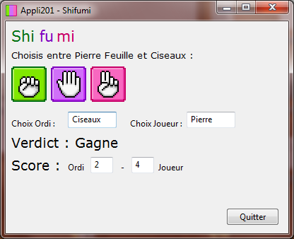

25 octobre 2009
Boulot, JDLL, vacances !
Cela fait presque deux mois que j'ai commencé ma formation en BTS informatique de gestion, l'ambiance est géniale et je me sens vraiment dans mon élément. (Qu'est ce que je pouvais bien faire en BTS communication l'année dernière :o).
Bref, j'apprends le langage Pascal, je révise le HTML et le CSS, je fais du MCD, MRD et j'en passe.
Une des dernières applications réalisée en cours est le Shifumi (ou Papier Caillou Ciseaux). Je vous propose de télécharger le jeu ici (pour Windows mais j'essaie de compiler sur Linux dès que je peux ;) ). Les sources sont disponibles sur mon SVN Google Code.
 [/caption]
La semaine dernière je n'étais pas en cours mais aux Journées du Logiciel Libre à Lyon (Villeurbanne) pour présenter le logiciel Songbird sur lequel je contribue depuis un moment maintenant. J'étais accompagné par Olivier, étudiant Nantais en MIAGE qui lui travaille sur le projet et notamment l'extension BirdQuizz. L'évènement était vraiment sympa, beaucoup de rencontres, j'ai passé des soirées géniales avec les Moziliens ainsi que Sébastien (qui nous hébergeait) et Mirsal contributeur VLC.
Qu'en ressortir de cet évènement ? Songbird commence à être connu en France, il serait maintenant intéressant d'approfondir avec peut être une conférence ou des ateliers sur le logiciel. Je pense par exemple à Stephen Lau qui a fait une conférence à Prague (MozCamp EU09) sur la création d'une extension Songbird.
Aux JDLL, il y a eu de très bonnes conférences dont celle de Paul Rouget et Tristan Nitot sur la "Bidouillabilité". Fabien Cazenave à aussi fait une conférence pour présenter son projet "KompoZer" (dont je me suis servis en cours et même avant avec NVU) avec la version 0.8 qui sort très bientôt et une version 0.9 qui utilisera le moteur Gecko 1.9.3
Pour un bilan des JDLL spécifique à Songbird, rendez-vous sur le blog Frenchbirds. Vous retrouverez aussi toute mes photos de l'évènement dans ma galerie Flickr.
Depuis hier, je suis en vacances ! Je vais pouvoir avancer sur mes projets personnels et pas seulement Songbird ! En effet j'ai un nouveau projet que je compte mener à bien et qui sera libre (Plus d'information bientôt). Quid de mon ancien projet WIMM ? C'est en pause, j'attends d'en apprendre plus sur les bases de données.
[/caption]
La semaine dernière je n'étais pas en cours mais aux Journées du Logiciel Libre à Lyon (Villeurbanne) pour présenter le logiciel Songbird sur lequel je contribue depuis un moment maintenant. J'étais accompagné par Olivier, étudiant Nantais en MIAGE qui lui travaille sur le projet et notamment l'extension BirdQuizz. L'évènement était vraiment sympa, beaucoup de rencontres, j'ai passé des soirées géniales avec les Moziliens ainsi que Sébastien (qui nous hébergeait) et Mirsal contributeur VLC.
Qu'en ressortir de cet évènement ? Songbird commence à être connu en France, il serait maintenant intéressant d'approfondir avec peut être une conférence ou des ateliers sur le logiciel. Je pense par exemple à Stephen Lau qui a fait une conférence à Prague (MozCamp EU09) sur la création d'une extension Songbird.
Aux JDLL, il y a eu de très bonnes conférences dont celle de Paul Rouget et Tristan Nitot sur la "Bidouillabilité". Fabien Cazenave à aussi fait une conférence pour présenter son projet "KompoZer" (dont je me suis servis en cours et même avant avec NVU) avec la version 0.8 qui sort très bientôt et une version 0.9 qui utilisera le moteur Gecko 1.9.3
Pour un bilan des JDLL spécifique à Songbird, rendez-vous sur le blog Frenchbirds. Vous retrouverez aussi toute mes photos de l'évènement dans ma galerie Flickr.
Depuis hier, je suis en vacances ! Je vais pouvoir avancer sur mes projets personnels et pas seulement Songbird ! En effet j'ai un nouveau projet que je compte mener à bien et qui sera libre (Plus d'information bientôt). Quid de mon ancien projet WIMM ? C'est en pause, j'attends d'en apprendre plus sur les bases de données.

[caption id="" align="alignright" width="222" caption="Stand Songbird"][/caption]
La semaine dernière je n'étais pas en cours mais aux Journées du Logiciel Libre à Lyon (Villeurbanne) pour présenter le logiciel Songbird sur lequel je contribue depuis un moment maintenant. J'étais accompagné par Olivier, étudiant Nantais en MIAGE qui lui travaille sur le projet et notamment l'extension BirdQuizz. L'évènement était vraiment sympa, beaucoup de rencontres, j'ai passé des soirées géniales avec les Moziliens ainsi que Sébastien (qui nous hébergeait) et Mirsal contributeur VLC.
Qu'en ressortir de cet évènement ? Songbird commence à être connu en France, il serait maintenant intéressant d'approfondir avec peut être une conférence ou des ateliers sur le logiciel. Je pense par exemple à Stephen Lau qui a fait une conférence à Prague (MozCamp EU09) sur la création d'une extension Songbird.
Aux JDLL, il y a eu de très bonnes conférences dont celle de Paul Rouget et Tristan Nitot sur la "Bidouillabilité". Fabien Cazenave à aussi fait une conférence pour présenter son projet "KompoZer" (dont je me suis servis en cours et même avant avec NVU) avec la version 0.8 qui sort très bientôt et une version 0.9 qui utilisera le moteur Gecko 1.9.3
Pour un bilan des JDLL spécifique à Songbird, rendez-vous sur le blog Frenchbirds. Vous retrouverez aussi toute mes photos de l'évènement dans ma galerie Flickr.
Depuis hier, je suis en vacances ! Je vais pouvoir avancer sur mes projets personnels et pas seulement Songbird ! En effet j'ai un nouveau projet que je compte mener à bien et qui sera libre (Plus d'information bientôt). Quid de mon ancien projet WIMM ? C'est en pause, j'attends d'en apprendre plus sur les bases de données.
Commentaires 0
Aucun commentaire.